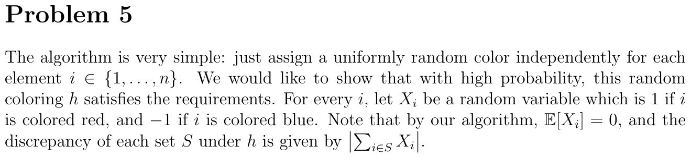
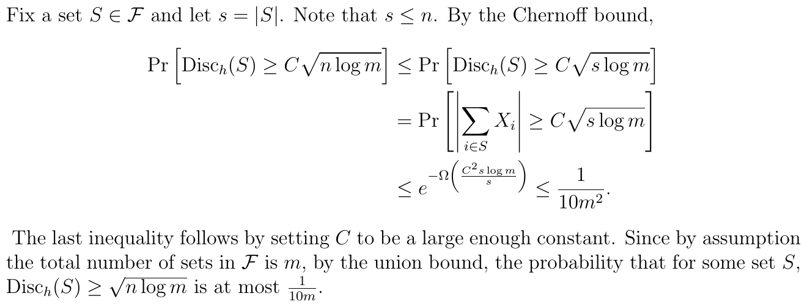

Catalog: 102 problems · 210 sub-questions · 420 expected crops · 0 MISSING
Advanced Algorithms — Question Catalog (QA contact sheet)
Randomized
Probability Basics & Quicksort 3 problems · 12 sub-Qs · 2 cross-topic
2017A-p1 easy exam-2017Asol ·
(a) easy Solve recurrence T(n)=3T(n/4)+Theta(n) for a divide-and-conquer running time (master theorem).
(b) easy Solve two-variable recurrence T(m/2,n/2)+c(m+n) via geometric sum, giving Theta(m+n).
(c) easy True/False: E[2x-y]=2E[x]-E[y] for dependent random variables (linearity of expectation).
(e) easy True/False: an algorithm with (1+eps)-quality and runtime O(n^(3+1/eps)) is a PTAS.
hw2025s1-p1 medium hw2025-AdvancedAlgorithmsExc1Sol ·
(a) medium Show ZPP equals the class with a poly-time 'I don't know' algorithm, using Markov + geometric-distribution expectation
(b) easy Show RP subset of BPP and coRP subset of BPP by probability amplification
(c) medium Prove ZPP = RP intersect coRP
2018B-p4 hard exam-2018Bsol ·
(a) easy Does the expected-runtime analysis of randomized selection apply to the worst-case input? (Yes.)
(b) easy What is the expectation in the randomized selection analysis over? (The random pivot choices.)
(c) medium Prove the recurrence E[T(n)] <= (2/n) sum E[T(k)] + Theta(n) for randomized selection.
(d) hard Prove by induction that E[T(n)] = O(n) for randomized selection using the given recurrence.
(e) medium Turn Monte Carlo selection into Las Vegas: run <=5 capped trials, bound failure via Markov to 1/2^5.
Karger's Min-Cut 2 problems · 2 sub-Qs · 1 cross-topic
hw2026s1-p3 medium hw2026-sol1 ·
(·) medium Use Karger's min-cut success bound to prove a graph has at most n(n-1)/2 minimum cuts
2024B-p3 medium exam-2024solB ·
(·) medium Prove a graph has at most n(n-1)/2 minimum cuts using Karger's success-probability analysis.
Concentration Bounds 11 problems · 11 sub-Qs · 5 cross-topic
hw2026s1-p6 medium hw2026-sol1 ·
(·) medium Sample s random +/-1 vectors so every character e_I has small bias, via Chernoff + union bound
hw2025s1-p5 medium hw2025-AdvancedAlgorithmsExc1Sol ·
(·) medium Random +/-1 coloring keeps every set's discrepancy O(sqrt(n log m)) via Chernoff + union bound


2023B-p6 medium exam-2023solB ·
(·) medium Randomized coloring achieving discrepancy <= C*sqrt(n log m) whp, via Chernoff and union bound over m sets.
2024A-p2 medium exam-2024solA ·
(·) medium Randomized algorithm estimating a CNF formula's satisfying-assignment density within 1/10 w.p. 1-2^-n via sampling + Chernoff.
2024C-p3 medium exam-2024solC ·
(·) medium Randomized algorithm finding a binary vector at Hamming distance >=n/3 from all of S, via Chernoff + union bound.
2025B-p5 medium exam-2025solB ·
(·) medium Randomized estimator of the fraction of legal 3-colorings within 1/n whp, via sampling and Chernoff.
2015A-p5 medium exam-2015Asol ·
(·) medium Number of samples (closed form, Chernoff) to estimate pi within 10% w.p. 3/4 via unit-cube/ball sampling.
2015B-p5 medium exam-2015Bsol ·
(·) medium Convert a Las Vegas algorithm to an O(n) Monte Carlo algorithm w.p. 9/10 correct via Markov's inequality.
2017A-p4 medium exam-2017Asol ·
(·) medium How many samples to estimate the fraction of ones within 0.01 with probability 0.9 (Chernoff bound).
2024B-p6 hard exam-2024solB ·
(·) hard Construct a (C log n, 1/100)-balanced bipartite graph whp: random edges, Chernoff + union bound over all subsets.
2025A-p4 hard exam-2025solA ·
(·) hard Randomized poly-time algorithm outputting an epsilon-unbiased set of size O(n/eps^2) w.p. 0.99 via random sampling + Chernoff + union bound.
The Probabilistic Method 2 problems · 5 sub-Qs · 0 cross-topic
2025A-p1 medium exam-2025solA ·
shared stem:
(a) easy T/F: every 3-CNF with m clauses has an assignment satisfying at most 7m/8 clauses (averaging argument).
(b) medium T/F: coefficients of f(x)^n computable in O(n^2 log n) ops via repeated squaring + FFT multiplication.
(c) easy T/F: computing n products Av1..Avn requires time n^3 (false; fast matrix multiplication gives O(n^omega)).
(d) medium T/F: for a connected regular graph, the eigenspace {v: Av=v} has dimension exactly 1 (spectral gap / connectivity).
2017B-p4 medium exam-2017Bsol ·
(a) medium Prove there always exists an assignment satisfying at least m/2 clauses of a 3-SAT formula.
Random Walks & Mixing 5 problems · 12 sub-Qs · 3 cross-topic
hw2025s2-p1 medium hw2025-AdvancedAlgorithmsExc2Sol ·
(a) easy A unit eigenvector x of lambda2 has some coordinate with x_i^2 >= 1/n
(b) easy Since x is orthogonal to the all-ones vector, some coordinate x_j <= 0
(c) medium Along a path in a connected graph there is an edge (u,v) with |x_u - x_v| >= 1/(n sqrt n)
(d) medium Conclude an upper bound on lambda2 (spectral gap) from the large edge difference
hw2025s2-p2 medium hw2025-AdvancedAlgorithmsExc2Sol ·
(a) medium Show a disconnected d-regular graph has lambda2 = 1 via multiplicity of eigenvalue 1
(b) medium Show a bipartite d-regular graph has smallest eigenvalue lambda_n = -1
2024A-p1 medium exam-2024solA ·
shared stem:
(a) easy T/F: if primal and dual are both feasible, the primal optimum can be strictly greater than the dual optimum (strong duality).
(b) easy T/F: a symmetric matrix with det>=0 is PSD (false; counterexample -I).
(c) easy T/F: poly-time algorithm exists to find an orthonormal basis of a span (Gram-Schmidt).
(d) medium T/F: if the reduced-cost vector is strictly positive at a BFS, that BFS is the unique optimum.
2025C-p3 medium exam-2025solC ·
(·) medium Prove a lazy random walk (stay 1/3, move 2/3) on a regular connected graph reaches t in poly steps w.p. >=1/2n.
2017B-p3 medium exam-2017Bsol ·
(·) medium Using cover time <= 2mn and Markov, prove a random walk from s visits t within 8mn steps w.p. >= 3/4.
Isolation Lemma 2 problems · 2 sub-Qs · 2 cross-topic
2024A-p3 medium exam-2024solA ·
(·) medium Prove random edge weights in {1..p(n)} yield a unique min-weight path for every vertex pair w.p. >=0.9 (isolation lemma + union bound).
hw2025s2-p3 hard hw2025-AdvancedAlgorithmsExc2Sol ·
(·) hard Find a min-weight perfect matching with exactly k red edges via the isolation lemma and symbolic determinant with weights 2^w
Algebraic
PIT & Schwartz–Zippel 10 problems · 13 sub-Qs · 2 cross-topic
hw2026s1-p1 medium hw2026-sol1 ·
(·) medium Prove the Schwartz-Zippel lemma by induction on the number of variables
hw2026s1-p2 medium hw2026-sol1 ·
(·) medium Prove a polynomial computed by an arithmetic formula of size s has degree at most s (induction on structure)
hw2026s1-p4 medium hw2026-sol1 ·
(·) medium Randomized test whether the subspace spanned by matrices B1..Bk contains an invertible matrix via det + Schwartz-Zippel
hw2025s1-p4 medium hw2025-AdvancedAlgorithmsExc1Sol ·
(·) medium Randomized equality-testing protocol with O(log n) communication via random prime modulus or polynomial fingerprint
2024A-p6 medium exam-2024solA ·
(·) medium Randomized algorithm deciding whether the span of matrices B1..Bk contains an invertible matrix (Schwartz-Zippel on det(sum xi Bi)).
2025A-p5 medium exam-2025solA ·
(·) medium Randomized algorithm deciding determinantal equivalence of two directed graphs' symbolic adjacency matrices (Schwartz-Zippel on det difference).
2025B-p1 medium exam-2025solB ·
shared stem:
(a) easy T/F: some nonzero polynomial of degree < m vanishes on all order-m roots of unity (false by Schwartz-Zippel).
(b) easy T/F: an n x n by n x n^2 matrix product can be done in fewer than n^4 operations (block decomposition, n^{w+1}).
(c) easy T/F: at most half the students score at least twice the average grade (Markov's inequality).
(d) medium T/F: if det(A+I)=0 for a normalized adjacency matrix then G is bipartite (-1 is an eigenvalue).
2025C-p4 medium exam-2025solC ·
(·) medium Randomized test of whether two branching programs (matrix-product polynomials) are equal, via Schwartz-Zippel.
hw2026s1-p5 hard hw2026-sol1 ·
(·) hard Test if two rank-n matrices share a common column basis using Cauchy-Binet and Schwartz-Zippel
2023A-p5 hard exam-2023solA ·
(·) hard Randomized algorithm for Matrix Completion max rank via random substitution; prove correctness, runtime, error (Schwartz-Zippel on a submatrix determinant).
FFT & Polynomial Multiplication 7 problems · 11 sub-Qs · 1 cross-topic
hw2025s3-p2 easy hw2025-AdvancedAlgorithmsExc3Sol ·
(a) easy Karatsuba: compute the cross term x0y1+x1y0 with a single extra multiplication
(b) easy Solve the Karatsuba recurrence T(n)=3T(n/2)+O(n) = O(n^log2(3))
hw2025s3-p1 medium hw2025-AdvancedAlgorithmsExc3Sol ·
(·) medium Multiply two bivariate polynomials by Kronecker substitution y=x^(2n+1), reducing to one univariate FFT product
hw2025s3-p3 medium hw2025-AdvancedAlgorithmsExc3Sol ·
(·) medium Count the ways to write k=i+j with i in A, j in B (sumset) via polynomial multiplication with FFT
2023A-p6 medium exam-2023solA ·
(·) medium O(n log n) algorithm computing the sumset A+B and counts of representations via FFT polynomial multiplication.
2024B-p2 medium exam-2024solB ·
(·) medium Prove the Walsh-Hadamard transform Hn*x can be computed in O(N log N) via an FFT-style divide-and-conquer.
2025B-p4 medium exam-2025solB ·
(·) medium Given f, g with f=g*h, find coefficients of h in O(n log n) via evaluate-at-roots (FFT), divide, interpolate.
2025C-p1 medium exam-2025solC ·
shared stem: 
(a) easy T/F: if k divides n, every order-k root of unity is also an order-n root of unity.
(b) medium T/F: the min multiplications for matrix mult satisfy a_{k^2} <= (a_k)^2 (recursive block multiplication).
(c) medium T/F: random edge weights in {1,...,4|E|} give unique min and unique max weight cut w.p. >=1/2 (isolation lemma).
(d) easy T/F: x is optimal for an LP iff x is a vertex (false; interior/edge optima exist).
Matrix-Multiplication Applications 9 problems · 15 sub-Qs · 5 cross-topic
2024C-p2 easy exam-2024solC ·
(·) easy Compute the boolean matrix product A o B in time o(n^3) by casting it to integer matrix multiplication.
2018A-p1 easy exam-2018Asol ·
(a) easy Write and solve Strassen's recurrence T(n)=7T(n/2)+Theta(n^2) giving Theta(n^log2(7)).
(b) easy Solve recurrence T(5n/6)+T(n/10)+Theta(n^2) (top level dominates), giving Theta(n^2).
(e) easy Is the randomized min-cut algorithm Monte Carlo or Las Vegas? (Monte Carlo.)
hw2025s2-p4 medium hw2025-AdvancedAlgorithmsExc2Sol ·
(·) medium Count triangles in a graph via the trace of A^3 using fast matrix multiplication
hw2025s2-p5 medium hw2025-AdvancedAlgorithmsExc2Sol ·
(·) medium Compute transitive closure via (A+I)^n using fast matrix multiplication and repeated squaring
hw2025s3-p5 medium hw2025-AdvancedAlgorithmsExc3Sol ·
(a) medium Show rank(A) = rank(A^T A) by proving the two matrices have equal kernels
(b) medium Show rank(B) = m minus the number of zero eigenvalues for symmetric B
(c) medium Parallel algorithm computing rank(A) via the characteristic polynomial of A^T A (smallest nonzero coefficient)
hw2025s3-p6 medium hw2025-AdvancedAlgorithmsExc3Sol ·
(a) easy Show a PSD matrix (v^T A v >= 0) has all eigenvalues >= 0
(b) medium Show a PSD matrix A can be written as A = B^T B via diagonalization
(c) easy Show A = B^T B implies A is positive semidefinite
2023B-p5 medium exam-2023solB ·
(·) medium Compute transitive closure of a digraph in time o(n^3) via (A+I)^n by fast matrix mult and repeated squaring.
2024B-p4 medium exam-2024solB ·
(·) medium Compute the diameter of a strongly connected digraph in time o(n^3) via matrix powers and binary search.
2014A-p6 medium exam-2014Asol ·
(·) medium Prove two n-bit integers can be multiplied in O(n^{log2 3}) (Karatsuba divide-and-conquer).
Algebraic Bipartite Matching 0 problems · 0 sub-Qs · 1 cross-topic
— no dedicated problems (guide + cross-topic parts only) —
Linear Programming
LP Basics & Geometry 9 problems · 36 sub-Qs · 11 cross-topic
hw2025s3-p4 easy hw2025-AdvancedAlgorithmsExc3Sol ·
(·) easy Formulate a transportation / shipping-cost minimization problem as a linear program and solve it
2023A-p1 medium exam-2023solA ·
shared stem: 
(a) easy T/F: simplex can move to a different vertex whose objective value equals the previous vertex's (degeneracy).
(b) medium T/F: isolation lemma still holds if set weight is the product (not sum) of element weights.
(c) medium T/F: BPP(1/8,1/4)=BPP(2^-n,1-2^-n); error amplification via Chernoff bound.
(d) easy T/F: two 4x4 matrices can be multiplied with at most 49 multiplications (Strassen, one recursion level).
2024C-p1 medium exam-2024solC ·
shared stem:
(a) easy T/F: a standard-form polytope in R^n has at most 2^n vertices (one per subset of columns with full rank).
(b) easy T/F: for a nonzero degree-d polynomial there exist arguments in {1,...,d+1} where it is nonzero (Schwartz-Zippel).
(c) medium T/F: BPP(1/2,1/2)=BPP(1/3,2/3) (false; the trivial class contains all languages).
(d) medium T/F: parity of the number of perfect matchings in a bipartite graph is efficiently decidable via det(A) mod 2.
2025B-p3 medium exam-2025solB ·
(·) medium Prove that if the reduced cost vector is nonnegative then the basic feasible solution is optimal.
2014A-p10 medium exam-2014Asol ·
shared stem:
(a) easy Add slack variables and put a given LP into standard form for the simplex algorithm.
(b) easy Find the basic-feasible-solution vertex associated with a given basis {x1,s2}.
(c) medium Determine which non-basic variable first enters the basis in a simplex pivot.
(d) medium Determine which basic variable leaves the basis via the min-ratio rule in a simplex pivot.
(e) easy Compute the objective value after the first simplex pivot.
2015A-p7 medium exam-2015Asol ·
(a) medium Add slack variables and perform the first simplex pivot, writing objective and basics as non-basic functions.
(b) medium Write the dual linear program of a given maximization LP.
(c) medium Prove the dual optimum is at least 40 using a feasible primal solution and weak/strong duality.
(d) medium Model min |2x+y-3| + |10x+y+5| as a linear program using auxiliary variables.
2015B-p7 medium exam-2015Bsol ·
(a) easy Identify the graph problem of a given ILP (maximum independent set).
(b) easy Write the LP relaxation of the maximum-independent-set ILP.
(c) medium Prove the independent-set LP optimum is at least n/2 via the all-halves feasible solution.
(d) easy Describe a 100-vertex graph whose independent-set ILP optimum is 1 (a clique).
(e) medium Write the dual of the independent-set LP relaxation.
(f) medium Interpret the dual ILP as a graph problem (minimum edge cover).
(g) medium Poly-time algorithm for minimum edge cover via maximum matching, with a correctness argument.
2018A-p3 medium exam-2018Asol ·
(a) easy Write minimum-cost perfect matching as an integer linear program, defining the variables.
(b) easy Write the LP relaxation of the perfect-matching ILP, removing redundant constraints.
(c) medium Write the dual of the matching LP relaxation and state the dual variables.
(d) medium Express min |2x-10| subject to 4x-5>=0 as a linear program (auxiliary variable z).
hw2025s4-p2 hard hw2025-AdvancedAlgorithmsExc4Sol ·
(a) medium Bland's-rule termination: establish sign facts about the pivot column (A_ts>0, s<t, reduced costs)
(b) medium Bland's-rule termination: construct direction d and prove its properties (d_j>=0, Ad=0)
(c) medium Bland's-rule termination: reduced-cost sign facts at the new basis B'
(d) medium Bland's-rule termination: show cost difference f = v^T A so that f dot d = 0
(e) medium Bland's-rule termination: sign analysis of the coordinates of f
(f) hard Bland's-rule termination: derive the contradiction f dot d > 0, proving the simplex cannot cycle
LP Duality & Farkas 13 problems · 37 sub-Qs · 9 cross-topic
2017A-p6 easy exam-2017Asol ·
(a) easy Write minimum hitting set as a binary integer linear program.
(b) easy Write the dual of the LP relaxation of the minimum hitting set program.
(c) easy Describe the combinatorial problem given by the ILP version of the dual (max disjoint sets / set packing).
(d) easy Convert a given LP with equalities and sign constraints into standard form.
hw2025s4-p1 medium hw2025-AdvancedAlgorithmsExc4Sol ·
(·) medium Derive a standard-form variant of Farkas' lemma (exists y>=0, y^T A>=0, y^T b<0) from the class version
hw2025s4-p3 medium hw2025-AdvancedAlgorithmsExc4Sol ·
(a) medium Primal infeasible plus dual feasible implies the dual is unbounded (via Farkas)
(b) medium Dual infeasible plus primal feasible implies the primal is unbounded (via Farkas)
2023A-p4 medium exam-2023solA ·
shared stem:
(a) medium Relax the maximum-matching IP to an LP and write it in standard form (with slack variables).
(b) medium Write and simplify the dual LP of the fractional-matching LP from part (a).
(c) medium Identify that adding integrality to the dual LP gives Vertex Cover (dual of matching; Konig's theorem).
2023B-p1 medium exam-2023solB ·
shared stem:
(a) easy T/F: if primal polyhedron is bounded and non-empty, primal and dual optima coincide (strong duality).
(b) easy T/F: each pivoting step of the simplex algorithm runs in polynomial time in the input length.
(c) easy T/F: there is a nonzero 5-variable polynomial vanishing on every integer assignment (false by Schwartz-Zippel).
(d) medium T/F: in a regular graph with second eigenvalue <=1/2, a random walk reaches t within C log n steps w.p. >=1/2n.
2023B-p2 medium exam-2023solB ·
(·) medium State and prove the weak duality theorem for LPs in standard form.
2024C-p6 medium exam-2024solC ·
(·) medium Prove a case of strong duality via Farkas: if (P) is infeasible and (D) feasible then (D) is unbounded.
2025A-p2 medium exam-2025solA ·
shared stem:
(a) medium Compute the dual of an LP with symmetric matrix A (min c^T x s.t. Ax>=c, x>=0).
(b) medium Show that x* with Ax*=c and x*>=0 is optimal for the LP (strong duality / self-dual argument).
2021A-p2 medium exam-finAA21Asol ·
shared stem:
(1) easy Write a 0/1 BIP to select maximum students subject to at most c_j selected per course; explain objective and constraints.
(2) medium For a given instance, write the primal in matrix/vector form and its dual BIP with variables y1..y4.
(3) medium Describe the general dual BIP (course-selection / covering problem) and interpret its variables, constraints, and objective.
(4) medium Prove/disprove: LP-relaxation rounding (x_i>=1/u ->1) of the student-selection LP always yields a feasible integral solution (false).
2021B-p1 medium exam-finAA21Bsol ·
shared stem:
(1) easy Formulate maximum semi-matching in a bipartite graph as a 0/1 binary integer program; explain objective/constraints.
(2) medium Write the semi-matching BIP in matrix/vector form for the given graph and its dual BIP.
(3) medium Describe the general dual of the semi-matching BIP and identify it as weighted vertex cover.
(4) medium Prove/disprove that rounding the LP relaxation (x_e>=1/2 -> 1) always yields a feasible integer solution (false).
2014B-p8 medium exam-2014Bsol ·
shared stem:
(a) easy Identify the graph problem of a given covering ILP (vertex cover).
(b) easy Write the LP relaxation of the vertex-cover ILP.
(c) medium Write the dual of the vertex-cover LP relaxation.
(d) medium Interpret the dual ILP of vertex cover as the maximum matching problem.
2016A-p6 medium exam-2016Asol ·
(a) medium Write maximum-weight matching as a binary integer linear program.
(b) medium Write the dual of the LP relaxation of the maximum-weight matching program.
(c) easy Describe the problem expressed by the matching dual LP (weighted vertex cover).
(d) easy Add slack variables and write a given LP in the standard form for the simplex algorithm.
(e) medium Find the vertex associated with a given simplex basis {x1,s1}.
hw2026s4-p1 hard hw2026-ex4_solutions ·
shared stem:
(a) hard Farkas II: if {Cx<=d} is infeasible then the perturbed {Cx<=d+2^-L' 1} is still infeasible
(b) medium If {Cx<=d} is feasible, a ball of radius 2^-2L' around a feasible point lies inside {Cx<=d+2^-L' 1}
Integer Programming & TUM 10 problems · 19 sub-Qs · 6 cross-topic
2023A-p2 easy exam-2023solA ·
(·) easy Write an integer program for Minimum Dominating Set and justify variables and constraints.
2024A-p4 easy exam-2024solA ·
(·) easy Write an integer linear program for weighted Max-SAT and justify variables and constraints.
2025A-p3 easy exam-2025solA ·
(·) easy Write an integer linear program for Minimum Makespan (assign n jobs to m machines minimizing max load).
hw2026s4-p2 medium hw2026-ex4_solutions ·
shared stem:
(a) easy Write an integer program for maximum clique
(b) easy Write an integer program for subset-sum feasibility
(c) medium Write an integer program for graph coloring / chromatic number
2023B-p4 medium exam-2023solB ·
shared stem:
(a) easy Prove every Hamiltonian cycle gives a feasible solution to the degree-constraint TSP integer program.
(b) medium Show the converse fails: a feasible IP solution (two disjoint cycles) not corresponding to a Hamiltonian cycle.
(c) medium Prove that adding subtour-elimination constraints makes every feasible IP solution a Hamiltonian cycle.
2024B-p1 medium exam-2024solB ·
shared stem:
(a) easy T/F: a polynomial-time algorithm for integer linear programs would imply P=NP (reduction from independent set).
(b) easy T/F: there is an efficient algorithm to decide whether a given point y is a vertex of a standard-form polytope.
(d) medium T/F: the n-th elementary symmetric polynomial in eigenvalues is efficiently computable via characteristic-poly coefficients.
2024C-p4 medium exam-2024solC ·
(·) medium Write an integer linear program for bin packing (bin-used and item-assignment variables) and justify it.
2025B-p2 medium exam-2025solB ·
shared stem:
(a) easy Write the integer linear program for weighted set cover and explain variables/constraints.
(b) medium Give an f-approximation for set cover of frequency f via LP relaxation and threshold rounding at 1/f.
2014A-p4 medium exam-2014Asol ·
shared stem:
(a) medium Write minimum weight dominating set as an integer linear program.
(b) medium Give a dominating-set instance where the LP relaxation optimum is fractional (integrality gap).
2014B-p7 medium exam-2014Bsol ·
shared stem:
(a) medium Write bin packing as an integer linear program and explain the variables.
(b) medium 2-approximation for minimizing bin capacity with fixed number of bins (greedy least-loaded scheduling).
Approximation
Approximation Algorithms 19 problems · 35 sub-Qs · 5 cross-topic
hw2026s4-p3 medium hw2026-ex4_solutions ·
shared stem:
(a) easy Give the IP/LP formulation of set cover
(b) medium Randomized LP rounding for set cover: show E[|S|] = LPOPT <= OPT
(c) medium Show each element is covered with probability >= 1-1/e under one round of LP rounding
(d) medium Repeat rounding T=ln(n/eps) times; union bound gives an O(log n) set-cover approximation
hw2025s5-p2 medium hw2025-AdvancedAlgorithmsExc5Sol ·
(·) medium Greedy 1/(Delta+1)-approximation for maximum independent set on graphs of max degree Delta
2023A-p3 medium exam-2023solA ·
(·) medium Give a 2/3-approximation for Maximum Triple Cut (random 3-partition, derandomized via conditional expectations).
2023B-p3 medium exam-2023solB ·
(·) medium Give a 3-approximation for vertex cover in a 3-uniform hypergraph (greedy or LP rounding).
2024B-p5 medium exam-2024solB ·
(·) medium d-approximation for minimum-weight representative set (hitting set with |Tj|<=d) via LP relaxation and rounding.
2025C-p2 medium exam-2025solC ·
shared stem:
(a) medium Show the stated LP is the dual of the set-cover LP relaxation by reducing to standard form.
(b) medium Prove the sets whose dual constraints are tight form a set cover (complementary-slackness / primal-dual).
(c) medium Show an f-approximation for set cover by solving the dual and picking tight sets (primal-dual analysis).
2021A-p3 medium exam-finAA21Asol ·
shared stem:
(1) medium Design a 4/3-approximation for TSP on a complete graph with edge weights 1 or 2, using a minimum cycle cover (first step given).
(2) medium Prove the cycle-cover-based algorithm returns a TSP tour of cost at most (4/3)OPT.
2021B-p3 medium exam-finAA21Bsol ·
shared stem:
(1) medium Give a 2/3-approximation for MAX-3-COLORING via sequential greedy vertex placement minimizing illegal edges.
(2) medium Prove the 2/3 approximation ratio for the greedy MAX-3-COLORING algorithm.
2014A-p5 medium exam-2014Asol ·
(·) medium 2-approx for min-cost subgraph connecting each receiver to some sender, via reduction to Steiner tree.
2014A-p8 medium exam-2014Asol ·
shared stem:
(a) medium MAX-3SAT: random assignment gives 7/8-approximation in expectation, prove via linearity of expectation.
(b) medium Closed-form bound (Markov) on probability the random MAX-3SAT assignment satisfies < 3/4 of clauses.
2014A-p9 medium exam-2014Asol ·
(a) medium Prove any maximal matching is a 2-approximation for maximum matching.
2015B-p3 medium exam-2015Bsol ·
(·) medium Prove min-weight maximum matching MATCH <= OPT/2 for the TSP tour in a complete weighted graph.
2016A-p5 medium exam-2016Asol ·
(·) medium Prove or refute that a given greedy algorithm is a 2-approximation for maximum cut (refute).
2017B-p2 medium exam-2017Bsol ·
(a) medium Prove the greedy ratio-sorted knapsack algorithm has unbounded approximation ratio (counterexample).
(b) easy Write the knapsack problem as a binary integer linear program.
(c) easy Write the LP relaxation of the knapsack BIP.
(d) medium Write the dual of the knapsack LP relaxation.
2018A-p2 medium exam-2018Asol ·
(a) medium Describe a polynomial 3-approximation for minimum hitting set when every subset has size <= 3.
(b) medium Prove the |D|<=3 hitting-set greedy is a polynomial 3-approximation (disjoint-sets lower bound).
(c) easy Give a 3-competitive online algorithm for hitting set with |D|<=3 (same greedy works in arrival order).
2018B-p2 medium exam-2018Bsol ·
(a) medium Refute that min-degree greedy independent set has approximation ratio 1 (counterexample graph).
(b) medium Prove the min-degree greedy is a polynomial (D+1)-approximation for independent set on max-degree-D graphs.
hw2026s4-p4 hard hw2026-ex4_solutions ·
(·) hard SDP relaxation + Goemans-Williamson random-hyperplane rounding gives a 0.878 approx for Max-2-LIN
2015A-p6 hard exam-2015Asol ·
(a) medium Bin packing with 1/m weights: prove at most k-1 non-full bins after packing all items of weight >= 1/k.
(b) easy Bin packing with 1/m weights: lower bound (1-1/k) on the total weight in each non-last bin.
(c) hard Prove the decreasing-weight bin-packing algorithm is an additive 1-approximation.
2017A-p3 hard exam-2017Asol ·
(·) hard Prove a Christofides variant (match all-but-two odd vertices) is a 1.5-approx for metric Path-TSP.